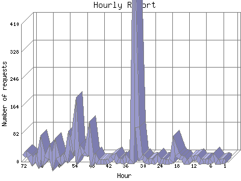

The Hourly Report identifies the level of activity for each hour within the report timeframe. Remember that one page hit can result in several server requests as the images for each page are loaded.

| Hour | Number of requests | Number of page requests | |
|---|---|---|---|
| 1. | Jul 16, 2006 00:00 - 00:59 | 0 | 0 |
| 2. | Jul 16, 2006 01:00 - 01:59 | 1 | 1 |
| 3. | Jul 16, 2006 02:00 - 02:59 | 0 | 0 |
| 4. | Jul 16, 2006 03:00 - 03:59 | 0 | 0 |
| 5. | Jul 16, 2006 04:00 - 04:59 | 13 | 2 |
| 6. | Jul 16, 2006 05:00 - 05:59 | 1 | 1 |
| 7. | Jul 16, 2006 06:00 - 06:59 | 0 | 0 |
| 8. | Jul 16, 2006 07:00 - 07:59 | 1 | 0 |
| 9. | Jul 16, 2006 08:00 - 08:59 | 2 | 2 |
| 10. | Jul 16, 2006 09:00 - 09:59 | 0 | 0 |
| 11. | Jul 16, 2006 10:00 - 10:59 | 13 | 1 |
| 12. | Jul 16, 2006 11:00 - 11:59 | 11 | 1 |
| 13. | Jul 16, 2006 12:00 - 12:59 | 11 | 0 |
| 14. | Jul 16, 2006 13:00 - 13:59 | 0 | 0 |
| 15. | Jul 16, 2006 14:00 - 14:59 | 0 | 0 |
| 16. | Jul 16, 2006 15:00 - 15:59 | 11 | 1 |
| 17. | Jul 16, 2006 16:00 - 16:59 | 12 | 1 |
| 18. | Jul 16, 2006 17:00 - 17:59 | 21 | 1 |
| 19. | Jul 16, 2006 18:00 - 18:59 | 46 | 3 |
| 20. | Jul 16, 2006 19:00 - 19:59 | 2 | 2 |
| 21. | Jul 16, 2006 20:00 - 20:59 | 0 | 0 |
| 22. | Jul 16, 2006 21:00 - 21:59 | 0 | 0 |
| 23. | Jul 16, 2006 22:00 - 22:59 | 1 | 1 |
| 24. | Jul 16, 2006 23:00 - 23:59 | 0 | 0 |
| 25. | Jul 17, 2006 00:00 - 00:59 | 11 | 1 |
| 26. | Jul 17, 2006 01:00 - 01:59 | 0 | 0 |
| 27. | Jul 17, 2006 02:00 - 02:59 | 2 | 1 |
| 28. | Jul 17, 2006 03:00 - 03:59 | 0 | 0 |
| 29. | Jul 17, 2006 04:00 - 04:59 | 1 | 0 |
| 30. | Jul 17, 2006 05:00 - 05:59 | 13 | 0 |
| 31. | Jul 17, 2006 06:00 - 06:59 | 11 | 1 |
| 32. | Jul 17, 2006 07:00 - 07:59 | 102 | 1 |
| 33. | Jul 17, 2006 08:00 - 08:59 | 408 | 2 |
| 34. | Jul 17, 2006 09:00 - 09:59 | 1 | 1 |
| 35. | Jul 17, 2006 10:00 - 10:59 | 2 | 2 |
| 36. | Jul 17, 2006 11:00 - 11:59 | 11 | 1 |
| 37. | Jul 17, 2006 12:00 - 12:59 | 0 | 0 |
| 38. | Jul 17, 2006 13:00 - 13:59 | 3 | 1 |
| 39. | Jul 17, 2006 14:00 - 14:59 | 1 | 0 |
| 40. | Jul 17, 2006 15:00 - 15:59 | 16 | 1 |
| 41. | Jul 17, 2006 16:00 - 16:59 | 11 | 1 |
| 42. | Jul 17, 2006 17:00 - 17:59 | 2 | 1 |
| 43. | Jul 17, 2006 18:00 - 18:59 | 0 | 0 |
| 44. | Jul 17, 2006 19:00 - 19:59 | 0 | 0 |
| 45. | Jul 17, 2006 20:00 - 20:59 | 0 | 0 |
| 46. | Jul 17, 2006 21:00 - 21:59 | 0 | 0 |
| 47. | Jul 17, 2006 22:00 - 22:59 | 13 | 2 |
| 48. | Jul 17, 2006 23:00 - 23:59 | 0 | 0 |
| 49. | Jul 18, 2006 00:00 - 00:59 | 72 | 5 |
| 50. | Jul 18, 2006 01:00 - 01:59 | 23 | 2 |
| 51. | Jul 18, 2006 02:00 - 02:59 | 25 | 2 |
| 52. | Jul 18, 2006 03:00 - 03:59 | 36 | 3 |
| 53. | Jul 18, 2006 04:00 - 04:59 | 16 | 3 |
| 54. | Jul 18, 2006 05:00 - 05:59 | 117 | 2 |
| 55. | Jul 18, 2006 06:00 - 06:59 | 44 | 3 |
| 56. | Jul 18, 2006 07:00 - 07:59 | 64 | 8 |
| 57. | Jul 18, 2006 08:00 - 08:59 | 9 | 8 |
| 58. | Jul 18, 2006 09:00 - 09:59 | 14 | 3 |
| 59. | Jul 18, 2006 10:00 - 10:59 | 0 | 0 |
| 60. | Jul 18, 2006 11:00 - 11:59 | 12 | 1 |
| 61. | Jul 18, 2006 12:00 - 12:59 | 39 | 3 |
| 62. | Jul 18, 2006 13:00 - 13:59 | 0 | 0 |
| 63. | Jul 18, 2006 14:00 - 14:59 | 31 | 3 |
| 64. | Jul 18, 2006 15:00 - 15:59 | 11 | 1 |
| 65. | Jul 18, 2006 16:00 - 16:59 | 1 | 1 |
| 66. | Jul 18, 2006 17:00 - 17:59 | 44 | 1 |
| 67. | Jul 18, 2006 18:00 - 18:59 | 0 | 0 |
| 68. | Jul 18, 2006 19:00 - 19:59 | 13 | 1 |
| 69. | Jul 18, 2006 20:00 - 20:59 | 0 | 0 |
| 70. | Jul 18, 2006 21:00 - 21:59 | 16 | 3 |
| 71. | Jul 18, 2006 22:00 - 22:59 | 23 | 1 |
| 72. | Jul 18, 2006 23:00 - 23:59 | 16 | 1 |
Most active hour Jul 12, 2006 15:00 - 15:59 : 13 pages sent.
Hourly average: 1.20547945205479 pages sent. 18.9041095890411 requests handled. 249.924 TB bytes served.
This report was generated on July 19, 2006 03:35.
Report time frame July 12, 2006 05:31 to July 18, 2006 23:50.
| Web statistics report produced by: | |
| analog 5.1 | Report Magic for Analog 2.10 |